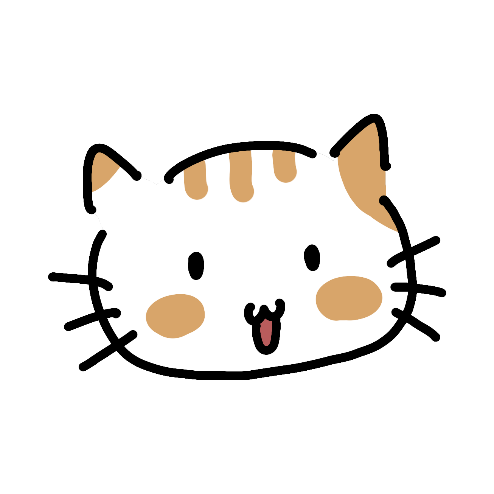

친구들끼리 가볍게 쓰는 할 일 관리 앱. 카테고리, 캘린더, 습관, 일기, 그리고 친구의 오늘까지 한 곳에서.
할 일을 카테고리별로 나눠서 관리하고, 드래그로 순서나 카테고리를 바로 옮길 수 있어요.
날짜별 할 일이 캘린더 칸 안에 바로 보이고, 공휴일도 자동으로 표시돼요.
매일 하는 습관을 체크하고 연속 달성일과 활동 지도로 한눈에 확인해요.
날짜별로 자유롭게 쓰는 나만의 일기장, 그리고 친구 한 명과 함께 쓰는 교환일기까지.
코드로 친구를 추가하면 서로 자동으로 연결돼요. 캘린더로 날짜를 넘겨가며 친구의 할 일을 볼 수 있어요 (비공개 카테고리는 제외).
친구 화면에서 바로 1:1 채팅을 나눌 수 있어요.
TODOon-Setup-1.6.8.exe를 받아요.Windows가 "알 수 없는 게시자" 경고를 띄우면 추가 정보 → 실행을 눌러주세요. 서명되지 않은 개인 배포 앱이라 나오는 정상적인 안내예요. 크롬이나 엣지가 다운로드 자체를 "위험한 파일"이라며 막으면, 화면 아래 다운로드 알림 옆의 ⌄ 또는 ... 버튼 → 계속 유지/다운로드 유지를 눌러주세요. 서명 인증서가 없는 개인 배포 프로그램이라 생기는 오탐이에요. 그래도 막히면 압축파일(zip)로 받아보세요. 실행 파일이 아니라 이런 차단이 덜해요 (압축을 푼 뒤 todo_on.exe를 실행하면 돼요). 이후 새 버전이 나오면 앱 안의 업데이트 알림에서 지금 업데이트를 누르는 것만으로 자동으로 받아서 설치돼요.
TODOon-1.6.8.apk를 받아요.안드로이드는 아직 자동 업데이트가 없어서, 새 버전이 나오면 이 페이지에서 apk를 다시 받아 설치해야 해요 (기존 데이터는 그대로 유지돼요). v1.3.9 이하 버전을 쓰고 계셨다면, v1.4.3부터는 앱 내부 이름이 바뀌어서 안드로이드가 다른 앱으로 인식해요. 기존 앱을 삭제하고 이 버전을 새로 설치해주세요 (로그인 계정 기준으로 데이터는 그대로 유지돼요). v1.4.5 이하를 설치했는데 계속 같은 버전으로 업데이트하라고 떴다면, 내부 빌드 번호가 고정돼 있던 버그 때문이에요. v1.4.6부터는 고쳐졌으니 최신 버전을 새로 받아 설치해주세요.